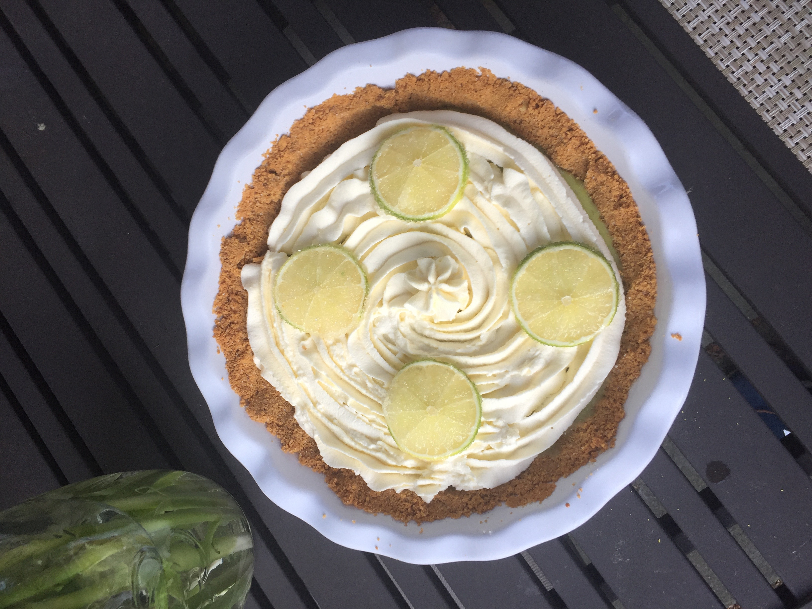

back to home
one of my main interests is hobbyist engineering and coding. Working with some 3d printing software and online diagrams, I made a rechargeable bluetooth speaker!

I also enjoy the outdoors, whether at home or on trips. Here is the view from the top of Angel's Landing at Zion National Park!
I have a bit of a sweet tooth, and whenever I can I like to bake all sorts of confections, from pies, to cakes, to lamingtons, and beyond.